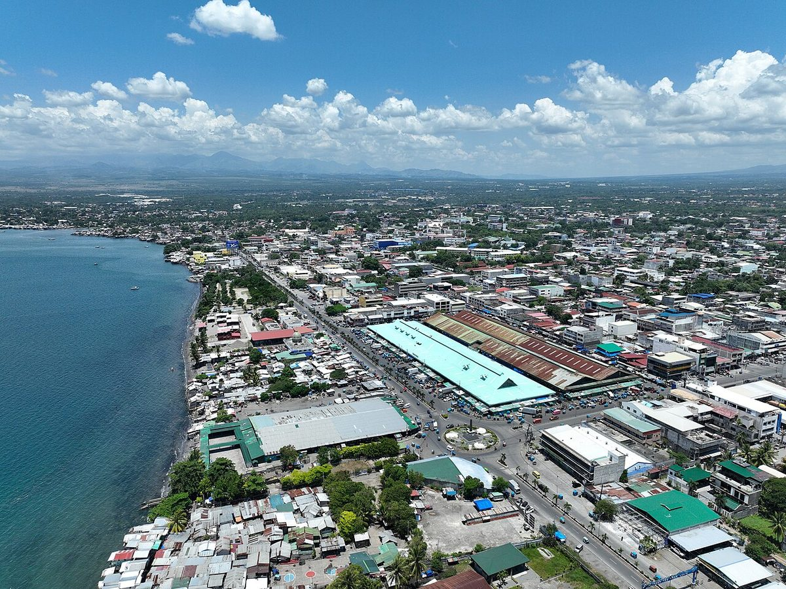

Мэнни Пакьяо: уличный боец, покоривший восемь весовых категорий
От ночевок на тротуарах Манилы до титулов на протяжении четырех десятилетий: феноменальный путь филиппинской легенды.

Прежде чем вписать свое имя в историю бокса в качестве единственного чемпиона мира в восьми весовых категориях, 14-летний Мэнни Пакьяо (Manny Pacquiao) вкалывал на стройках Манилы. При весе меньше 45 килограммов он ежедневно решал мучительную дилемму: потратить последние гроши на скудную еду или отправить их матери в Генерал-Сантос.
Эта борьба за выживание закалила характер человека, чья карьера стала одной из величайших в истории мирового спорта. За три десятилетия на профессиональном ринге Пакьяо провел 73 боя, одержал 62 победы при 8 поражениях и 2 ничьих, завоевал 12 мировых титулов по престижным версиям и стал единственным боксером, становившимся чемпионом в четырех разных календарных десятилетиях.
Пыльные ринги провинции

Эммануэль Дапидран Пакьяо родился 17 декабря 1978 года в Кибаве (провинция Букиднон), откуда его семья позже перебралась в Генерал-Сантос (Южный Котабато). Он был четвертым из шести детей в семье Росалио Пакьяо и Дионисии Дапидран. Когда мальчик учился в шестом классе, родители развелись, и семья оказалась на грани нищеты. Мэнни успел окончить начальную школу Сааведра Савай, но катастрофическая нехватка денег вынудила подростка навсегда бросить учебу.
Все изменилось в феврале 1990 года. 11-летний Пакьяо увидел по телевизору, как андердог Джеймс «Бастер» Даглас с коэффициентом 42 к 1 сенсационно нокаутировал в Токио абсолютного чемпиона в тяжелом весе Майка Тайсона. Дядя мальчика по материнской линии, Сардо Мехия (Sardo Mejia), заметив блеск в глазах племянника, соорудил на заднем дворе самодельный ринг. Уже через полгода Пакьяо дрался в городском парке Генерал-Сантоса, выигрывая копеечные гонорары, которых хватало ровно на мешок риса.
К 15 годам он был безоговорочно сильнейшим юниором острова Минданао с любительским рекордом 60-4. В поисках настоящих вызовов и заработка для семьи Мэнни «зайцем» сел на паром до Манилы. Днем он работал разнорабочим на стройплощадках, ночью спал прямо на рингах в боксерских залах, а в январе 1995 года, едва отметив 16-летие, дебютировал в профи в лимите первого наилегчайшего веса (до 48,1 кг).
Восемь покоренных дивизионов

Свой первый пояс чемпиона мира Мэнни взял 4 декабря 1998 года, за две недели до 20-летия, нокаутировав в Таиланде Чатчая Сасакула (Chatchai Sasakul) в бою за титул WBC в наилегчайшем весе. Но подлинным катализатором его взлета на мировой Олимп стал переезд в США в 2001 году и знакомство с тренером Фредди Роучем (Freddie Roach) в знаменитом зале Wild Card в Голливуде.
Выйдя на замену всего за две недели до боя в июне 2001-го в Лас-Вегасе, Пакьяо сенсационно остановил чемпиона IBF во втором легчайшем весе Лехлохоноло Ледвабу (Lehlohonolo Ledwaba). В течение последующих десяти лет его феноменальная ручная скорость, взрывные атаки под нестандартными углами и стойка левши сокрушили целое поколение будущих членов Зала славы. В 2003 году он деклассировал Марко Антонио Барреру, затем выдал культовую трилогию с Эриком Моралесом и провел четыре драматичнейших поединка против главного мексиканского антагониста — Хуана Мануэля Маркеса.
Набирая мышечную массу без малейшей потери резкости, Пакьяо раз раз за разом опровергал законы физиологии при смене весовых категорий. В декабре 2008 года филиппинец перепрыгнул сразу через два дивизиона и буквально уничтожил суперзвезду Оскара Де Ла Хойю, заставив того капитулировать на табуретке после восьмого раунда. Спустя пять месяцев, в мае 2009-го, он наглухо вырубил Рикки Хаттона во втором раунде в MGM Grand, прибрав к рукам пояс The Ring в первом полусреднем весе.
Когда в ноябре 2010 года Мэнни устроил 12-раундовую показательную порку Антонио Маргарито в битве за вакантный титул WBC в первом среднем весе, он покорил свой восьмой весовой дивизион — рекорд, не побитый по сей день. Пакьяо владел линейными чемпионскими титулами в четырех категориях (наилегчайшей, полулегкой, втором полулегком и первом полусреднем весах) и собрал чемпионские пояса в четырех классических исторических дивизионах бокса.
Долголетие стало его фирменным знаком. В июле 2019 года, в возрасте 40 лет и 7 месяцев, Пакьяо нанес первое поражение в карьере Киту Турману в Лас-Вегасе, завоевав пояс WBA в полусреднем весе и став самым возрастным чемпионом этого дивизиона в истории.
Жизнь за пределами канатов
Вне ринга Пакьяо конвертировал колоссальную народную любовь в успешный бизнес и политическую деятельность. Еще в феврале 2007 года он экстерном сдал экзамены за среднюю школу. В 2010-м жители провинции Сарангани избрали его в Палату представителей Филиппин, где он отработал два срока, а в 2016-м победил на общенациональных выборах в Сенат Филиппин.
В перерывах между парламентскими сессиями и чемпионскими лагерями Мэнни с 2014 по 2017 год выступал в Филиппинской баскетбольной ассоциации (PBA) за клуб «Киа» в роли играющего тренера, а позже основал полупрофессиональную лигу Maharlika Pilipinas Basketball League. На музыкальном поприще его кавер-версия баллады «Sometimes When We Touch» добралась до 19-й строчки чарта US Billboard Adult Contemporary.
В сентябре 2021 года Пакьяо объявил о завершении боксерской карьеры ради участия в президентских выборах, на которых в мае 2022 года финишировал третьим, уступив Фердинанду Маркосу-младшему. Завершив участие в электоральных баталиях после промежуточных выборов 2025 года, Пакьяо получил назначение от президента Маркоса: в 2026 году он возглавил Национальную комиссию по борьбе с бедностью. Круг замкнулся: бывший бездомный мальчишка встал во главе государственной системы борьбы с той самой нищетой, которая когда-то заставила его впервые выйти на боксерский ринг.